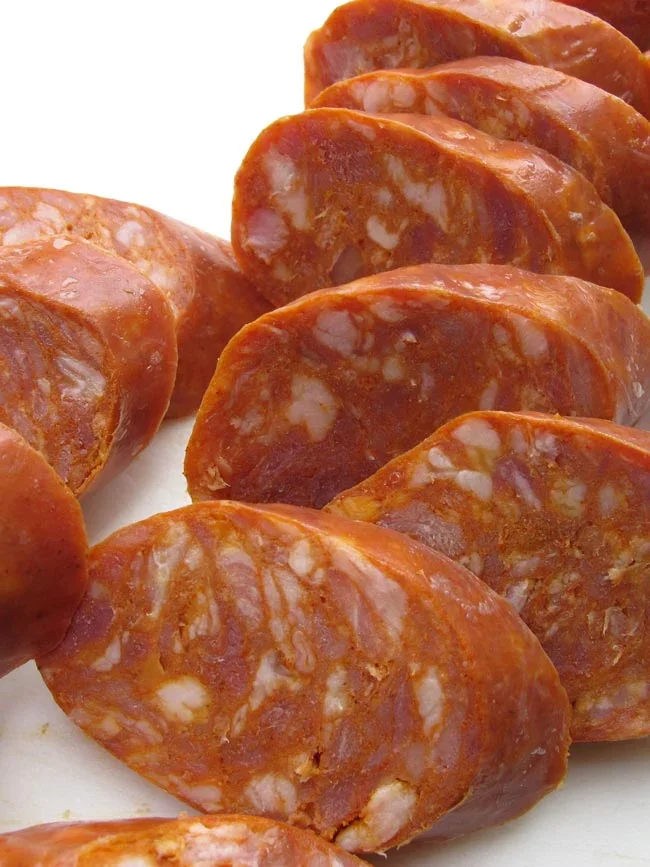

Portuguese sausage is a popular breakfast staple in Hawaii, inspired by sausages brought to the islands by Portuguese immigrants in the late 1800s. It is typically seasoned with garlic, paprika, and other spices, giving it a savory, slightly smoky, and mildly sweet flavor. In Hawaii, it is commonly sliced and pan-fried until browned and caramelized, then served alongside eggs, rice, toast, or pancakes. The crispy exterior and juicy interior make it a favorite component of local-style breakfasts.
Make a complete breakfast dish with other foods such as rice or scrambled eggs!